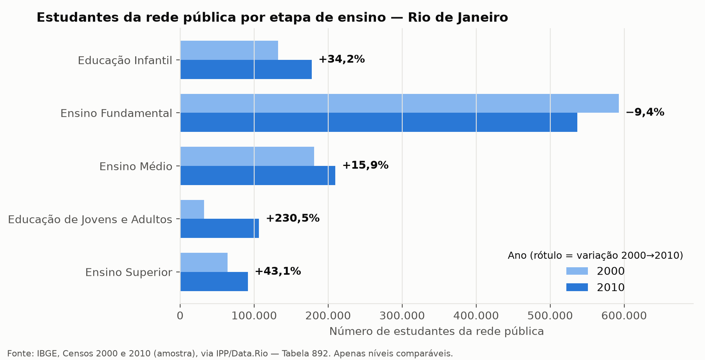
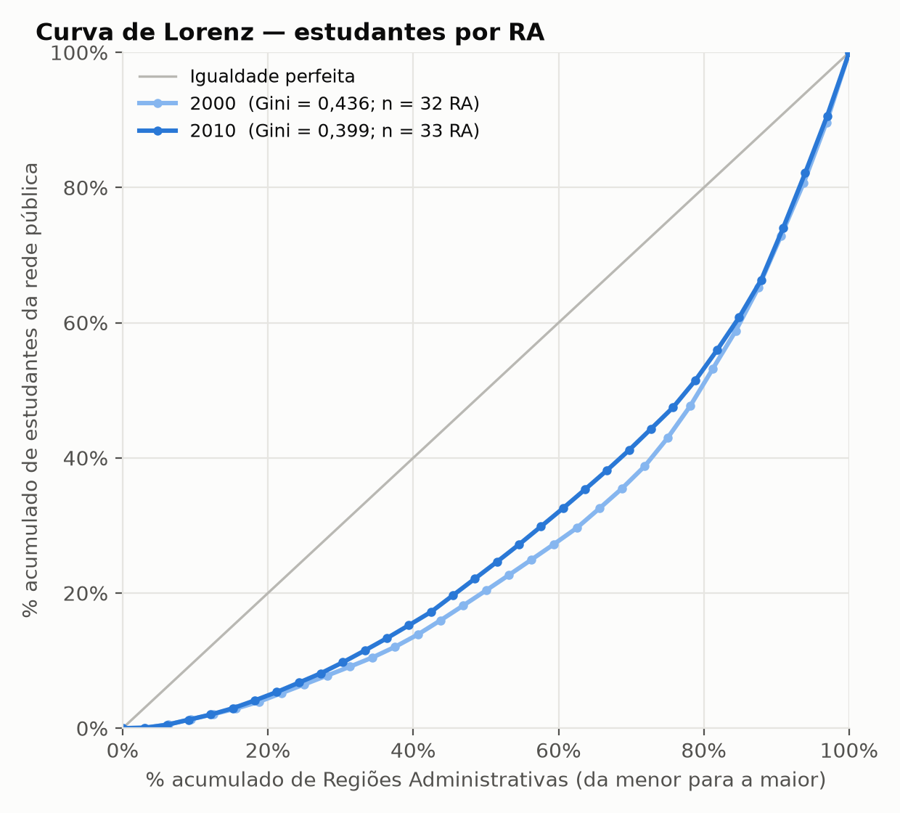
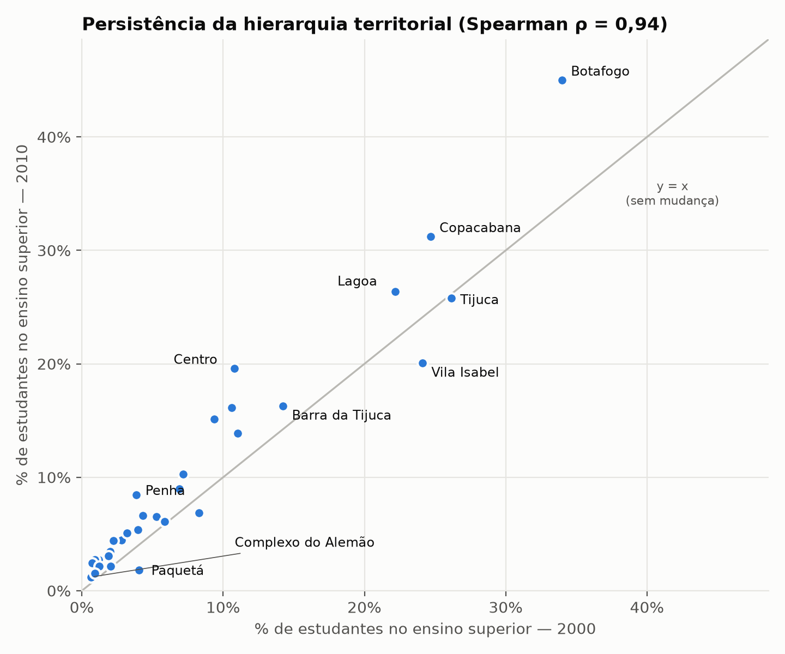

Resumo
Este estudo investiga como se transformou, entre os Censos Demográficos de 2000 e 2010, a população de estudantes da rede pública do Município do Rio de Janeiro segundo o nível de ensino e as Regiões Administrativas (RA) de residência. A partir da Tabela 892 do Armazém de Dados do Instituto Pereira Passos, foi construído um pipeline determinístico em Python (pandas e NumPy) que interpreta o cabeçalho mesclado da planilha, trata os marcadores especiais do IBGE sem imputação, harmoniza as categorias de ensino distintas nos dois censos e compatibiliza a criação da RA Vigário Geral. A análise exploratória combina medidas de variação, concentração (Gini, HHI), dispersão e correlação de postos. Os resultados mostram que a rede pública cresceu 12,0%, chegando a 1,12 milhão de estudantes, mas com recomposição interna: o ensino fundamental regular encolheu 9,4%, ao passo que creche (+119%), educação de jovens e adultos (+230%) e ensino superior (+43%) se expandiram. Territorialmente, a distribuição tornou-se levemente menos concentrada (Gini de 0,436 para 0,399), com crescimento liderado por Barra da Tijuca, Portuária e Rocinha. O peso do ensino superior público, porém, permanece muito desigual — de 1,2% no Complexo do Alemão a 45,0% em Botafogo — e a hierarquia entre RA quase não mudou (ρ de Spearman = 0,94). Os achados indicam que a expansão do acesso não alterou a geografia do ensino superior público na cidade e reforçam a importância de indicadores territorializados para o planejamento educacional.
Palavras-chave: educação pública; Censo Demográfico; Regiões Administrativas; Rio de Janeiro; desigualdade territorial; ciência de dados aberta.
1. Introdução
O Rio de Janeiro é uma cidade marcada por fortes contrastes socioespaciais. A mesma metrópole que concentra universidades públicas de referência abriga territórios onde o acesso a creches, à conclusão da educação básica e ao ensino superior é historicamente limitado. Compreender quem estuda na rede pública e onde essas pessoas vivem é condição para planejar a oferta de vagas, dimensionar a educação de jovens e adultos e avaliar se políticas de expansão alcançam os territórios que mais precisam delas.
A década de 2000 foi um período de mudanças relevantes na educação brasileira: ampliação do ensino fundamental para nove anos (BRASIL, 2006), criação do FUNDEB com financiamento estendido à educação infantil e à educação de jovens e adultos (BRASIL, 2007) e expansão do ensino superior. Os Censos Demográficos de 2000 e 2010 permitem observar, para cada Região Administrativa do município, o saldo dessas transformações a partir do local de residência dos estudantes — uma perspectiva que os registros administrativos por escola não oferecem.
Apesar da relevância, a tabela publicada pelo Instituto Pereira Passos não está pronta para análise: tem cabeçalhos mesclados, notas e marcadores textuais misturados aos números, categorias de ensino diferentes em cada censo e uma RA que só existe em 2010. Este trabalho propõe um pipeline aberto e reprodutível que resolve esses problemas e responde a três perguntas de pesquisa:
- RQ1Como variou a composição da população estudantil da rede pública por etapa de ensino entre 2000 e 2010 no município e nas Áreas de Planejamento?
- RQ2Como os estudantes da rede pública se distribuem entre as RA, essa distribuição se tornou mais ou menos concentrada, e onde ocorreram o crescimento e a retração?
- RQ3Existe desigualdade territorial no peso do ensino superior público entre as RA, e ela se reduziu no período?
O restante do artigo descreve a fonte e o tratamento dos dados (Seção 2), apresenta e discute os resultados para cada pergunta (Seção 3), sintetiza conclusões e limitações (Seção 4) e documenta a disponibilidade dos dados segundo os princípios FAIR (Seção 5).
2. Metodologia e Pipeline de Dados
2.1 Fonte primária e granularidade
Os dados vêm da Tabela 892 — Número de estudantes da rede pública por nível de ensino, segundo as Regiões Administrativas — 2000/2010, publicada pelo Instituto Pereira Passos (IPP) no Armazém de Dados/Data.Rio, a partir dos Censos Demográficos do IBGE (questionário da amostra). O arquivo .xls tem uma aba por ano. A unidade de observação é a RA de residência do estudante (32 RA em 2000 e 33 em 2010, além da linha de total do município) e as colunas representam níveis de ensino: 13 em 2000 e 12 em 2010. Por serem dados amostrais, os valores de 2010 são estimativas ponderadas, com casas decimais.
dtype=object)2.2 Parsing do arquivo não trivial
O cabeçalho ocupa três linhas mescladas (rótulo geral, nível de ensino e modalidade — por exemplo, Ensino fundamental → Regular seriado). Em vez de fixar números de linha, o pipeline localiza dinamicamente a linha “Regiões Administrativas” e o início dos dados (“Rio de Janeiro”), propaga horizontalmente os rótulos mesclados (ffill) e compõe nomes únicos de coluna. Assim, o mesmo código funciona para as duas abas, que têm larguras diferentes.
src/etl.py — montagem dos nomes de coluna a partir do cabeçalho mesclado
def montar_colunas(bruto: pd.DataFrame, ini_cab: int) -> list[str]:
nivel = bruto.iloc[ini_cab + 1].ffill() # desfaz a mesclagem horizontal
sub = bruto.iloc[ini_cab + 2] # modalidade (regular, supletivo...)
nomes = []
for j in range(bruto.shape[1]):
...
n = re.sub(r"\s+", " ", str(nivel.iat[j])).strip()
s = sub.iat[j]
nomes.append(f"{n} - {str(s).strip()}" if pd.notna(s) else n)
return nomes2.3 Tratamento de valores ausentes e conversão de tipos
As notas de rodapé definem dois marcadores com significados opostos: na aba de 2000, ... indica dado numérico não disponível; na de 2010, - indica zero absoluto, não resultante de arredondamento. Tratá-los da mesma forma seria um erro. O pipeline converte ... em NaN e - em 0, e guarda, para cada valor, o conteúdo original (valor_bruto) e a origem (status_dado) — nenhuma conversão é feita sem rastreabilidade.
src/etl.py — conversão auditável de cada célula
def converter_valor(bruto) -> tuple[float, str]:
"""Converte uma célula em (valor numérico, status_dado) sem perder a origem."""
if isinstance(bruto, (int, float)) and not pd.isna(bruto):
return float(bruto), "observado"
texto = str(bruto).strip()
if texto == "...": # nota da aba 2000
return np.nan, "nao_disponivel"
if texto == "-": # nota da aba 2010
return 0.0, "zero_absoluto"
...Foram identificadas 11 células indisponíveis em 2000 (7 em Paquetá e 4 de mestrado/doutorado em RA de favela) e 15 zeros absolutos em 2010. Optou-se por não imputar: a validação mostrou que o total publicado de cada RA é exatamente igual à soma das parcelas disponíveis (diferença máxima de 0,000%), o que significa que essas células não entram nos totais oficiais. Os valores decimais de 2010 foram mantidos em float64 e arredondados apenas na apresentação, evitando acumular erro de arredondamento. Os nomes das RA foram padronizados (espaços duplicados e grafias como IIha do Governador e SantaTeresa corrigidas), os algarismos romanos convertidos em inteiros e cada RA associada à sua Área de Planejamento (AP1 a AP5). As variáveis categóricas foram armazenadas com o tipo category.
2.4 Harmonização das categorias de ensino
Os censos não usam as mesmas categorias. Em 2000, fundamental e médio se dividem em regular seriado, regular não seriado e supletivo, e há “pré-vestibular” e “mestrado ou doutorado”; em 2010, há apenas regular e supletivo, e a pós-graduação aparece como especialização, mestrado e doutorado. Criou-se uma tabela de correspondência por expressões regulares sobre os nomes normalizados (sem acentos), que gera um nível harmonizado, uma etapa analítica e um indicador comparavel_2000_2010. Pré-vestibular (só em 2000; 2.165 estudantes) e especialização (só em 2010; 7.074) são preservados na base, mas excluídos das comparações temporais. O supletivo foi agrupado com a alfabetização de adultos na etapa Educação de Jovens e Adultos (EJA).
src/etl.py — trecho da tabela de harmonização (padrão → nível, etapa, comparável)
HARMONIZACAO = [
(r"^creche$", "Creche", "Creche", "Educação Infantil", True),
(r"^ensino fundamental.*regular seriado$", ..., "Fundamental regular", "Ensino Fundamental", True),
(r"^ensino fundamental.*supletivo$", ..., "Fundamental supletivo", "Educação de Jovens e Adultos", True),
(r"^pre-vestibular$", ..., "Pré-vestibular", "Pré-vestibular", False),
(r"^mestrado ou doutorado$", ..., "Mestrado/doutorado", "Ensino Superior", True),
(r"^mestrado$", ..., "Mestrado/doutorado", "Ensino Superior", True),
...
]
# qualquer coluna sem correspondência interrompe o pipeline com erro explícito2.5 Compatibilização territorial e métricas derivadas
A RA XXXI Vigário Geral aparece apenas em 2010; seus bairros (Cordovil, Jardim América, Parada de Lucas e Vigário Geral) eram contabilizados na RA XI Penha em 2000. Comparar Penha diretamente produziria uma falsa queda de 40%. Para evitar esse viés, criou-se a unidade Penha + Vigário Geral para as comparações temporais, mantendo as linhas originais na base.
src/etl.py — métricas de variação por RA
w["variacao_abs"] = w["estudantes_2010"] - w["estudantes_2000"]
w["variacao_pct"] = 100 * (w["estudantes_2010"] / w["estudantes_2000"] - 1)
w["taxa_anual_pct"] = 100 * ((w["estudantes_2010"] / w["estudantes_2000"]) ** (1 / 10) - 1)
def gini(valores):
x = np.sort(np.asarray(valores, dtype=float)); n = len(x)
return (2 * np.arange(1, n + 1) - n - 1).dot(x) / (n * x.sum())As métricas derivadas são: participação de cada etapa no total da RA; variação absoluta, percentual e taxa geométrica anual; participação de cada RA no município; o peso do ensino superior (graduação + mestrado/doutorado sobre o total comparável da RA); e medidas de concentração (coeficiente de Gini, participação das cinco maiores RA e índice de Herfindahl-Hirschman). Outliers foram identificados pela regra de Tukey (1,5 × intervalo interquartil) e a estabilidade da hierarquia territorial pela correlação de postos de Spearman (SciPy).
2.6 Validação e persistência
A cada execução é gerado o arquivo relatorio_qualidade.json. A soma das RA difere do total do município em −0,019% em 2000 (efeito da amostra, conforme nota do IBGE) e 0,000% em 2010. O notebook inclui asserções automáticas (ausência de negativos e de duplicidades, coerência dos totais). Os dados processados são gravados em formato longo (tidy), em Parquet e CSV.gz (UTF-8), sem nunca sobrescrever o arquivo bruto. O total comparável analisado é de 1.002.439 estudantes em 2000 e 1.122.759 em 2010.
3. Resultados e Discussão
3.1 RQ1 — A recomposição da rede pública por etapa de ensino
Entre 2000 e 2010 a rede pública ganhou cerca de 120 mil estudantes (+12,0%). O crescimento, porém, não foi homogêneo entre as etapas (Figura 1 e Tabela 1). O ensino fundamental regular, que concentrava 59,1% dos estudantes em 2000, perdeu 55,8 mil alunos (−9,4%) e caiu para 47,8% do total. Em sentido oposto, cresceram a educação infantil (+34,2%), o ensino médio regular (+15,9%), o ensino superior (+43,1%) e, principalmente, a educação de jovens e adultos (+230,5%).

| Etapa / nível | 2000 | 2010 | Variação | Part. 2000 | Part. 2010 |
|---|---|---|---|---|---|
| Creche | 21.799 | 47.706 | +118,8% | 2,2% | 4,2% |
| Pré-escola | 65.921 | 62.277 | −5,5% | 6,6% | 5,5% |
| Classe de alfabetização | 44.782 | 67.839 | +51,5% | 4,5% | 6,0% |
| Fundamental regular | 592.663 | 536.908 | −9,4% | 59,1% | 47,8% |
| Médio regular | 181.027 | 209.859 | +15,9% | 18,1% | 18,7% |
| Alfabetização de adultos | 6.091 | 16.912 | +177,7% | 0,6% | 1,5% |
| Fundamental supletivo | 20.737 | 40.497 | +95,3% | 2,1% | 3,6% |
| Médio supletivo | 5.440 | 49.223 | +804,8% | 0,5% | 4,4% |
| Superior — graduação | 54.998 | 79.435 | +44,4% | 5,5% | 7,1% |
| Mestrado/doutorado | 8.981 | 12.104 | +34,8% | 0,9% | 1,1% |
| Total comparável | 1.002.439 | 1.122.759 | +12,0% | 100% | 100% |
| Valores de 2010 são estimativas da amostra, arredondadas. Não incluídos: pré-vestibular (2.165 em 2000) e especialização (7.074 em 2010), por não existirem nos dois censos. | |||||
Três movimentos ajudam a interpretar esse quadro. Primeiro, a queda do fundamental regular é compatível com a transição demográfica — coortes de crianças menores — e com a redução da distorção idade-série, que diminui a permanência de jovens nessa etapa. Segundo, a dinâmica da educação infantil é heterogênea: creche mais que dobrou e a classe de alfabetização cresceu 51,5%, enquanto a pré-escola recuou 5,5%; a ampliação do fundamental para nove anos (BRASIL, 2006), que antecipou a matrícula das crianças de seis anos, é uma explicação plausível para essa redistribuição entre categorias. Terceiro, o salto da EJA, em especial do ensino médio supletivo (de 5,4 mil para 49,2 mil), coincide com a inclusão dessa modalidade no FUNDEB (BRASIL, 2007), mas pode também refletir diferenças de redação do questionário entre os censos — por isso a magnitude deve ser lida com cautela.
A recomposição ocorreu em todas as Áreas de Planejamento (Figura 2): o fundamental perdeu entre 9 e 13 pontos percentuais de participação em cada AP, e a EJA ganhou entre 5 e 7 pontos. A diferença marcante entre as APs está no ensino superior: na AP2 (Zona Sul e Grande Tijuca), ele responde por cerca de um quarto dos estudantes da rede pública (23,6% em 2000; 24,2% em 2010), enquanto na AP5 (Zona Oeste) não passa de 3,3% — tema retomado na RQ3.
3.2 RQ2 — Distribuição territorial: desconcentração e novos polos de crescimento
A distribuição de estudantes entre as RA é assimétrica (assimetria de 1,34 em 2010): Campo Grande (105,4 mil), Jacarepaguá (95,0 mil), Santa Cruz (91,2 mil) e Bangu (86,4 mil) reúnem, juntas, mais de um terço dos estudantes da rede pública, enquanto Paquetá tem menos de mil. Ainda assim, as medidas de concentração mostram uma leve desconcentração no período (Tabela 2 e Figura 4).
| Medida | 2000 | 2010 | Leitura |
|---|---|---|---|
| Número de RA | 32 | 33 | criação de Vigário Geral |
| Coeficiente de Gini | 0,436 | 0,399 | menor concentração |
| Participação das 5 maiores RA | 41,2% | 39,2% | −2,0 p.p. |
| Índice Herfindahl-Hirschman (HHI) | 531 | 485 | menor concentração |
| Coeficiente de variação | 0,85 | 0,79 | menor dispersão relativa |
| Parte da redução se deve à divisão da RA Penha. Mesmo assim, as maiores RA (AP5) perderam participação: de 33,9% para 31,6% do total. | |||
A Figura 3 revela três grupos. (i) Fronteiras de expansão: Barra da Tijuca (+71,5%) e Portuária (+68,2%) são os únicos outliers superiores pela regra de Tukey (limite de +67,8%), seguidas de Rocinha (+65,4%), São Cristóvão (+52,6%) e Maré (+48,2%). Em números absolutos, os maiores acréscimos vieram de Jacarepaguá (+16,5 mil), Santa Cruz (+14,2 mil), Barra da Tijuca (+13,0 mil) e Maré (+11,5 mil) — a AP4 cresceu 28,1% e a AP1, 33,7%. (ii) Estabilidade nos grandes subúrbios: Campo Grande (+1,6%), Bangu (−3,5%), Madureira (−3,3%) e Méier (−2,4%) praticamente não cresceram, o que explica por que a AP5, a mais populosa em estudantes, avançou só 4,5%. (iii) Retração em áreas consolidadas: Botafogo (−10,3%), Ilha do Governador (−8,5%), Realengo (−6,9%), Centro (−4,9%) e Lagoa (−4,6%).
A compatibilização territorial se mostrou essencial: comparada isoladamente, a Penha teria encolhido 40,0%; somada a Vigário Geral, a mesma área cresceu 17,5%, acima da média municipal. Esse é um exemplo concreto de como uma escolha de tratamento de dados muda a conclusão de uma análise.

A Curva de Lorenz de 2010 (Figura 4) se desloca em direção à diagonal sobretudo no trecho intermediário — as RA de porte médio, como Maré, Barra da Tijuca, Anchieta e Rocinha, ganharam participação. É importante notar que o Gini aqui mede a concentração de estudantes, que reflete principalmente o tamanho da população de cada RA; não é, por si só, um indicador de desigualdade de acesso. Para isso, a RQ3 usa uma métrica relativa.
3.3 RQ3 — A geografia persistente do ensino superior público
O peso do ensino superior — a parcela dos estudantes da rede pública de cada RA que cursa graduação, mestrado ou doutorado — subiu de 6,4% para 8,2% no município, e aumentou em 28 das 32 RA comparáveis (mediana de +1,7 p.p.). A dispersão entre as RA, contudo, é extrema (Tabela 3 e Figura 5).
| Estatística | 2000 | 2010 |
|---|---|---|
| Média das RA | 8,1% | 10,0% |
| Mediana | 4,2% | 6,1% |
| Desvio-padrão | 8,8 p.p. | 10,3 p.p. |
| Coeficiente de variação | 1,10 | 1,02 |
| Mínimo | 0,6% (Complexo do Alemão) | 1,2% (Complexo do Alemão) |
| Máximo | 34,0% (Botafogo) | 45,0% (Botafogo) |
| Amplitude | 33,3 p.p. | 43,8 p.p. |
| Razão máximo / mínimo | 53,3× | 37,3× |
| Outliers (Tukey) | Botafogo, Copacabana, Tijuca, Vila Isabel | Botafogo |
| Média > mediana nos dois anos: distribuição assimétrica à direita, puxada pelas RA da AP2. | ||
Em 2010, Botafogo (45,0%), Copacabana (31,2%), Lagoa (26,4%) e Tijuca (25,8%) estão no topo; no extremo oposto, Complexo do Alemão (1,2%), Santa Cruz (1,5%), Guaratiba (1,7%) e Rocinha (2,2%). A desigualdade relativa diminuiu levemente — o coeficiente de variação caiu de 1,10 para 1,02 e a razão entre máximo e mínimo, de 53 para 37 vezes —, porque as RA da base partiram de valores muito baixos. Já a distância absoluta aumentou: a amplitude passou de 33,3 para 43,8 pontos percentuais, com os maiores ganhos concentrados em Botafogo (+11,0 p.p.), Centro (+8,8 p.p.) e Copacabana (+6,5 p.p.), contra +0,6 p.p. no Complexo do Alemão e em Santa Cruz.

A Figura 6 mostra que a hierarquia entre as RA praticamente não se alterou: a correlação de postos de Spearman entre 2000 e 2010 é de ρ = 0,94 (p < 0,001). Apenas quatro RA perderam peso — Vila Isabel (−4,0 p.p.), Paquetá (−2,3 p.p., valor sensível ao tamanho reduzido e às células indisponíveis de 2000), Rio Comprido e Tijuca. Além disso, as RA com maior peso do superior em 2010 tiveram, em média, menor crescimento do total de estudantes da rede pública (Spearman ρ = −0,42; p = 0,018), o que reforça a leitura de que a expansão da rede pública ocorreu sobretudo na educação básica de áreas periféricas.
4. Conclusão
Este trabalho mostrou que, entre 2000 e 2010, a rede pública do Rio de Janeiro cresceu e mudou de perfil: menos estudantes no fundamental regular e muito mais em creche, educação de jovens e adultos e ensino superior. No território, o crescimento se deslocou para a Barra da Tijuca, Jacarepaguá, a região portuária e grandes favelas, com leve desconcentração entre as RA. O ensino superior público, por outro lado, manteve uma geografia rígida: as mesmas RA da Zona Sul e da Grande Tijuca seguem no topo, e a distância absoluta para a periferia aumentou. Do ponto de vista metodológico, o trabalho evidenciou que decisões de engenharia de dados — distinguir “não disponível” de “zero”, harmonizar categorias e compatibilizar territórios — alteram diretamente as conclusões, como no caso da Penha.
Limitações. (i) São dados da amostra do Censo, sujeitos a erro amostral, que não é divulgado na tabela; diferenças pequenas devem ser lidas com cautela. (ii) A tabela não traz a população residente por faixa etária, o que impede calcular taxas de atendimento — as métricas são de composição, não de cobertura. (iii) As categorias de ensino mudaram entre os censos; a harmonização reduz, mas não elimina, o risco de comparar conceitos diferentes (sobretudo no supletivo/EJA). (iv) O local é o de residência do estudante, não o da escola. (v) Com apenas dois pontos no tempo, não é possível identificar tendências nem relações causais.
Trabalhos futuros. Integrar a população residente por idade e RA (também disponível no Data.Rio) para calcular taxas de escolarização; incorporar o Censo Demográfico de 2022 assim que a tabela equivalente for publicada; cruzar os resultados com indicadores socioeconômicos (IDS, renda) para testar associações; e produzir mapas coropléticos com as malhas oficiais das RA.
5. Disponibilidade dos Dados e Declaração FAIR
Todo o código, os dados bruto e processados, o dicionário de dados, o notebook executado e este artigo estão disponíveis publicamente em github.com/rogerg7/estudantes-rede-publica-rio. Declaramos a aderência aos princípios FAIR (WILKINSON et al., 2016) conforme abaixo.
FFindable — Localizável
README com resumo executivo, palavras-chave, autoria, disciplina, semestre e instituição; link para a fonte original (Data.Rio, Tabela 892); metadados Dublin Core ecitation_* no cabeçalho desta página.AAccessible — Acessível
Repositório público; artigo aberto via GitHub Pages, responsivo; pipeline executável sem credenciais, APIs pagas ou downloads autenticados; dado bruto (60 KB) versionado com hash SHA-256.IInteroperable — Interoperável
data/data_dictionary.md descreve cada variável (significado, tipo primitivo e formato); dados processados em Parquet e CSV.gz UTF-8, em formato longo; gráficos interativos em HTML aberto.RReusable — Reutilizável
Licença MIT para o código e CC BY 4.0 para dados, figuras e texto;requirements.txt congelado com pip freeze; rastreabilidade de cada valor (valor_bruto, status_dado) e relatório de qualidade automático.Reprodução integral do pipeline (Linux/macOS; no Windows, ative com .venv\Scripts\activate)
$ git clone https://github.com/rogerg7/estudantes-rede-publica-rio.git
$ cd estudantes-rede-publica-rio
$ python -m venv .venv && source .venv/bin/activate
$ pip install -r requirements.txt
$ python -m src.etl # gera data/processed/ e relatorio_qualidade.json
$ python -m src.visualizacoes # gera docs/assets/ (PNG + Plotly)
$ jupyter nbconvert --to notebook --execute --inplace notebooks/analise_exploratoria.ipynb
$ python -m http.server -d docs 8000 # abre o artigo em http://localhost:8000| Arquivo | Conteúdo | Formato |
|---|---|---|
data/raw/tabela_892_…_2000_2010.xls | Dado bruto original (IPP/IBGE) | XLS |
data/processed/estudantes_ra_nivel_longo | Base tidy completa (837 linhas) | Parquet, CSV.gz |
data/processed/estudantes_ra_etapa | Estudantes por etapa e participação | Parquet, CSV.gz |
data/processed/variacao_ra_2000_2010 | Variação por RA (com unidade compatibilizada) | Parquet, CSV.gz |
data/processed/indicador_ensino_superior_ra | Peso do ensino superior por RA | Parquet, CSV.gz |
data/processed/relatorio_qualidade.json | Validações automáticas | JSON |
6. Referências
- BRASIL. Lei nº 11.274, de 6 de fevereiro de 2006. Altera a redação dos arts. 29, 30, 32 e 87 da Lei nº 9.394, de 20 de dezembro de 1996, dispondo sobre a duração de 9 (nove) anos para o ensino fundamental. Diário Oficial da União, Brasília, DF, 7 fev. 2006.
- BRASIL. Lei nº 11.494, de 20 de junho de 2007. Regulamenta o Fundo de Manutenção e Desenvolvimento da Educação Básica e de Valorização dos Profissionais da Educação – FUNDEB. Diário Oficial da União, Brasília, DF, 21 jun. 2007.
- HARRIS, C. R. et al. Array programming with NumPy. Nature, v. 585, p. 357–362, 2020. DOI: 10.1038/s41586-020-2649-2.
- HUNTER, J. D. Matplotlib: a 2D graphics environment. Computing in Science & Engineering, v. 9, n. 3, p. 90–95, 2007. DOI: 10.1109/MCSE.2007.55.
- IBGE – INSTITUTO BRASILEIRO DE GEOGRAFIA E ESTATÍSTICA. Censo Demográfico 2000: resultados da amostra. Rio de Janeiro: IBGE, 2002.
- IBGE – INSTITUTO BRASILEIRO DE GEOGRAFIA E ESTATÍSTICA. Censo Demográfico 2010: educação e deslocamento — resultados da amostra. Rio de Janeiro: IBGE, 2012.
- INSTITUTO PEREIRA PASSOS (IPP). Tabela 892 – Número de estudantes da rede pública por nível de ensino, segundo as Regiões Administrativas – 2000/2010. Rio de Janeiro: Armazém de Dados / Data.Rio. Disponível em: https://www.data.rio/. Acesso em: 9 nov. 2026.
- McKINNEY, W. Data structures for statistical computing in Python. In: PYTHON IN SCIENCE CONFERENCE, 9., 2010, Austin. Proceedings [...]. Austin: SciPy, 2010. p. 56–61. DOI: 10.25080/Majora-92bf1922-00a.
- PLOTLY TECHNOLOGIES INC. Collaborative data science. Montréal: Plotly Technologies Inc., 2015. Disponível em: https://plot.ly.
- TUKEY, J. W. Exploratory data analysis. Reading: Addison-Wesley, 1977.
- VIRTANEN, P. et al. SciPy 1.0: fundamental algorithms for scientific computing in Python. Nature Methods, v. 17, p. 261–272, 2020. DOI: 10.1038/s41592-019-0686-2.
- WICKHAM, H. Tidy data. Journal of Statistical Software, v. 59, n. 10, p. 1–23, 2014. DOI: 10.18637/jss.v059.i10.
- WILKINSON, M. D. et al. The FAIR Guiding Principles for scientific data management and stewardship. Scientific Data, v. 3, 160018, 2016. DOI: 10.1038/sdata.2016.18.